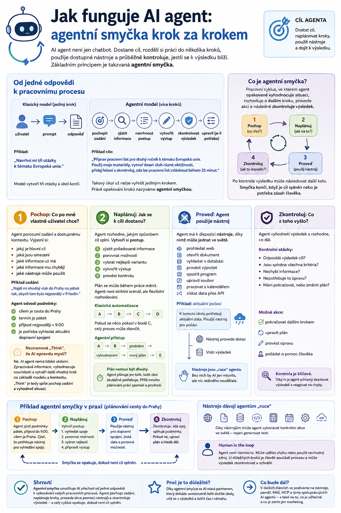

V prvním článku jsme si ukázali, že AI agent není jen chatbot, který umí odpovídat na otázky. Dostane cíl, rozdělí si práci do několika kroků, použije dostupné nástroje a průběžně kontroluje, jestli se k výsledku skutečně blíží.
Jak ale taková práce probíhá uvnitř? Základním principem je takzvaná agentní smyčka.

Od jedné odpovědi k pracovnímu procesu
Klasická práce s generativní AI často vypadá jednoduše:
Napíšeme:
„Navrhni mi tři otázky k tématu Evropská unie.“
Model vytvoří tři otázky a úkol končí.
U agenta můžeme zadat mnohem širší cíl:
„Připrav pracovní list pro druhý ročník k tématu Evropská unie. Použij moje materiály, vytvoř deset úloh různé obtížnosti, přidej řešení a zkontroluj, zda lze pracovní list zvládnout během 25 minut.“
Takový úkol už není možné rozumně vyřešit jediným krokem.
Agent musí například:
- pochopit zadání,
- zjistit potřebné informace,
- navrhnout postup,
- vytvořit pracovní list,
- zkontrolovat výsledek,
- případně jej upravit.
A právě toto opakování kroků nazýváme agentní smyčkou.
Co je agentní smyčka
Agentní smyčka je pracovní cyklus, ve kterém agent opakovaně vyhodnocuje situaci, rozhoduje o dalším kroku, provede akci a následně zkontroluje výsledek.
Často se setkáme se schématem:
Česky si jej můžeme přeložit například jako:
Po kontrole výsledku může následovat další kolo.
Smyčka končí ve chvíli, kdy agent vyhodnotí, že byl cíl splněn, nebo když narazí na situaci, ve které potřebuje zásah člověka.
1. Pochop: Co po mně vlastně uživatel chce?
První částí je porozumění zadání a dostupnému kontextu.
Agent si musí například vyjasnit:
- jaký je hlavní cíl,
- jaká jsou omezení,
- jaké informace už má,
- jaké informace mu chybějí,
- jaké nástroje může použít.
Představme si zadání:
„Najdi mi vhodný vlak do Prahy na pátek tak, abych tam byla nejpozději v 9 hodin.“
Agent musí z textu odvodit několik podmínek:
- cílem je cesta do Prahy,
- termín je pátek,
- příjezd musí být nejpozději v 9:00,
- je potřeba vyhledat aktuální dopravní spojení.
Jazykový model sám o sobě přitom aktuální jízdní řád nemusí znát. Agent tedy musí pochopit také to, že bude potřebovat externí zdroj nebo nástroj.
Znamená „Think“, že AI opravdu myslí?
Ne.
Slovo think je v těchto schématech užitečná zkratka, ale může být zavádějící.
AI agent nemá lidské vědomí a nepřemýšlí stejným způsobem jako člověk.
Ve skutečnosti model zpracovává informace, vyhodnocuje souvislosti a vytváří další vhodný krok na základě svého modelu a dostupného kontextu.
Proto je pro běžného uživatele přesnější překládat Think spíše jako pochop zadání a vyhodnoť situaci.
2. Naplánuj: Jak se k cíli dostanu?
Jakmile agent pochopí cíl, musí rozhodnout, jakým způsobem jej splní.
Může si například vytvořit postup:
- zjistit požadované informace,
- porovnat možnosti,
- vybrat nejlepší variantu,
- vytvořit výstup,
- provést kontrolu.
U složitějších úloh se plán může během práce měnit.
To je důležitý rozdíl mezi běžnou automatizací a agentem.
Klasická automatizace často funguje podle předem vytvořeného scénáře:
Pokud se něco pokazí v bodě C, celý proces může skončit.
Agentní systém může být flexibilnější:
Agent tedy nemusí pouze následovat pevně naprogramovaný postup. Může se podle situace rozhodovat mezi několika možnostmi.
Plán nemusí být dlouhý
Agent přitom nemusí vždy vytvářet komplikovaný plán o dvaceti krocích.
U jednoduché úlohy může rozhodnutí vypadat například takto:
Potřebuji zjistit aktuální počasí. Použiji nástroj pro předpověď počasí.
U složitějšího úkolu:
Nejprve projdu dokumenty, potom zjistím chybějící informace, následně vytvořím návrh, zkontroluji jeho správnost a nakonec připravím finální výstup.
Dobrý agent by měl plánovat pouze tolik, kolik konkrétní úkol skutečně potřebuje.
Příliš mnoho plánování může práci paradoxně zpomalit a prodražit.
3. Proveď: Agent použije nástroj
Tady se agentní AI zásadně odlišuje od obyčejného jazykového modelu.
Agent může dostat k dispozici nástroje.
Podle konkrétní aplikace může například:
- prohledat web,
- otevřít dokument,
- vyhledat informace v databázi,
- provést výpočet,
- spustit program,
- upravit soubor,
- pracovat s kalendářem,
- získat informace prostřednictvím API.
Řekněme, že má agent vytvořit přehled aktuálního počasí.
Model může rozhodnout:
K tomuto úkolu potřebuji aktuální data. Použiji nástroj pro počasí.
Nástroj provede dotaz a vrátí výsledek.
Agent pak s tímto výsledkem dále pracuje.
Tuto schopnost označujeme často jako tool use nebo function calling.
Tomu se budeme podrobně věnovat v dalším článku.
4. Zkontroluj: Co se po provedení akce stalo?
Po každé důležitější akci musí agent zjistit její výsledek.
To je fáze Observe.
Příklad:
Agent se pokusil najít dokument.
Výsledek:
Dokument nebyl nalezen.
Agent tedy nesmí jednoduše pokračovat, jako by dokument měl.
Místo toho musí výsledek zahrnout do dalšího rozhodování.
Může například:
- zkusit jiný vyhledávací dotaz,
- hledat v jiné složce,
- požádat uživatele o doplnění informace,
- změnit postup.
Právě schopnost reagovat na výsledek vlastní akce je pro agentní systémy zásadní.
A potom znovu
Po fázi Observe se agent vrací na začátek smyčky.
Nyní už ale má více informací než předtím.
Může tedy vyhodnotit:
Je úkol hotový?
Pokud ano, vytvoří finální odpověď.
Pokud ne, určí další krok.
Zjednodušeně:
↓
vyhodnocení situace
↓
plán
↓
akce
↓
výsledek
↓
kontrola
↓
hotovo?
→ ANO → výsledek pro uživatele
→ NE → další kolo smyčky
To je jeden ze základních mechanismů agentní AI.
Příklad ze školy
Představme si agenta, který dostane úkol:
„Připrav mi materiály na zítřejší hodinu angličtiny pro 2. ročník.“
Samotné zadání je velmi obecné.
Agent by mohl postupovat například takto.
1. Pochop
Zjistí:
- pro kterou třídu připravuje materiál,
- jaké téma je aktuálně v tematickém plánu,
- jakou jazykovou úroveň mají žáci,
- jak dlouhá je vyučovací hodina.
2. Naplánuj
Rozhodne:
3. Proveď
Použije například:
- tematický plán,
- učebnici,
- učitelovy materiály,
- dokumenty uložené ve školním úložišti.
4. Zkontroluj
Zjistí například:
Pracovní list obsahuje 18 úloh a pravděpodobně by zabral 50 minut.
Jenže hodina má 45 minut a část času bude potřeba na vysvětlení.
Agent tedy pokračuje.
5. Uprav plán
Rozhodne:
Zkrátím pracovní list na 12 úloh a náročnější aktivitu přesunu do dobrovolné části.
6. Znovu proveď a zkontroluj
Teprve potom připraví výsledný materiál.
To je v praxi agentní smyčka.
Co když agent udělá chybu?
A tady přichází jedna důležitá věc.
Agentní smyčka sama o sobě nezaručuje správný výsledek.
Agent může:
- špatně pochopit zadání,
- vytvořit chybný plán,
- použít nesprávný nástroj,
- získat nekvalitní informace,
- chybně vyhodnotit výsledek.
A někdy může smyčku dokonce opakovat špatným směrem.
Například:
Agent potom může velmi systematicky vyrábět nesmysl. Jen technologicky elegantněji. 🙂
Proto jsou důležité kontrolní mechanismy.
Kdy musí do procesu vstoupit člověk
Ne všechny akce by měl agent provádět automaticky.
Často se používá princip:
Člověk zůstává součástí pracovního procesu a některé kroky musí před provedením schválit.
Agent například může bez potvrzení:
- vyhledat informace,
- analyzovat dokument,
- připravit návrh,
- vytvořit souhrn.
Ale před akcemi typu:
- odeslat e-mail,
- zveřejnit dokument,
- objednat zboží,
- provést platbu,
- smazat data,
- změnit důležitý záznam,
může požádat:
„Chcete tuto akci opravdu provést?“
Čím větší dopad může mít určitá akce, tím důležitější je kontrola člověkem.
Agent nemusí být úplně autonomní
Když se mluví o agentní AI, často se používá slovo autonomie.
Ani zde ale není všechno černobílé.
Agent může mít různou míru samostatnosti.
Nízká autonomie
Agent navrhne další krok, člověk jej schválí.
Střední autonomie
Agent samostatně provádí běžné kroky, ale důležité akce potvrzuje člověk.
Vysoká autonomie
Agent provádí většinu procesu bez zásahu uživatele.
V praxi není nejvyšší autonomie automaticky nejlepší.
Pro řadu úloh je mnohem rozumnější vytvořit systém, který je částečně samostatný, ale dobře kontrolovatelný.
Agentní smyčka ve vibe codingu
Velmi dobře je tento princip vidět u moderních coding agentů.
Uživatel zadá:
„Přidej do mé aplikace možnost exportovat výsledky do PDF.“
Pochop
Prohlédne projekt a zjistí, jak je aplikace postavená.
Naplánuj
Rozhodne, které soubory bude potřeba upravit a jakou knihovnu použije.
Proveď
Napíše nebo změní kód.
Zkontroluj
Spustí aplikaci nebo testy.
Výsledek:
Export nefunguje. Chybí knihovna.
Agent pokračuje:
Teprve když aplikace funguje, může úkol označit za dokončený.
A právě proto jsou moderní coding nástroje tak dobrým příkladem skutečné agentní práce.
Nejde jen o generování kódu.
Jde o opakované řešení problému pomocí smyčky.
Co je tedy na agentní smyčce nejdůležitější?
Nejdůležitější není samotné pořadí čtyř anglických slov.
Podstatná je změna způsobu práce AI.
Běžný model dostane prompt a vytvoří odpověď.
Agent:
Právě tato zpětná vazba umožňuje vytvářet mnohem komplexnější systémy.
Zapamatujte si
AI agent nemusí znát celý postup předem.
Stačí, když dokáže:
- pochopit aktuální situaci,
- zvolit vhodný další krok,
- provést jej,
- zkontrolovat výsledek
- a podle něj pokračovat.
Právě opakování tohoto procesu tvoří agentní smyčku.
Co bude následovat
V agentní smyčce jsme několikrát narazili na jednu klíčovou věc: nástroje.
Jazykový model sám o sobě totiž neumí automaticky otevřít databázi, zjistit aktuální počasí nebo změnit událost v kalendáři.
Jakmile mu ale umožníme používat externí funkce a služby, jeho možnosti se výrazně rozšíří.
V příštím díle se proto podíváme na:
Vysvětlíme si, jak model pozná, kdy má nástroj použít, co se při volání nástroje skutečně děje a proč právě tato schopnost stojí za velkou částí dnešního rozvoje AI agentů.